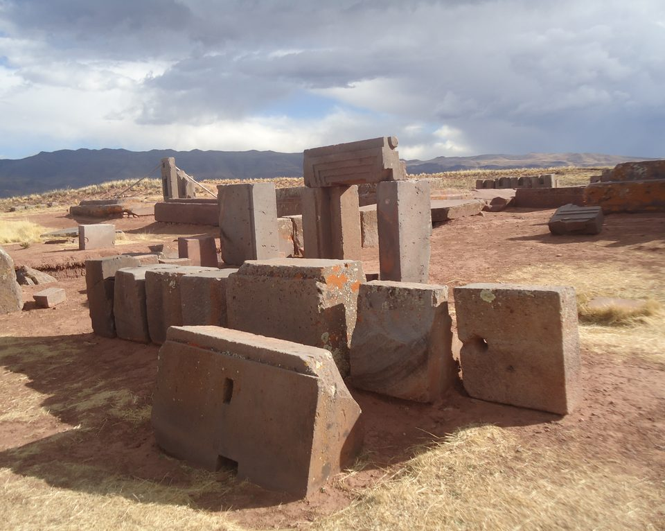
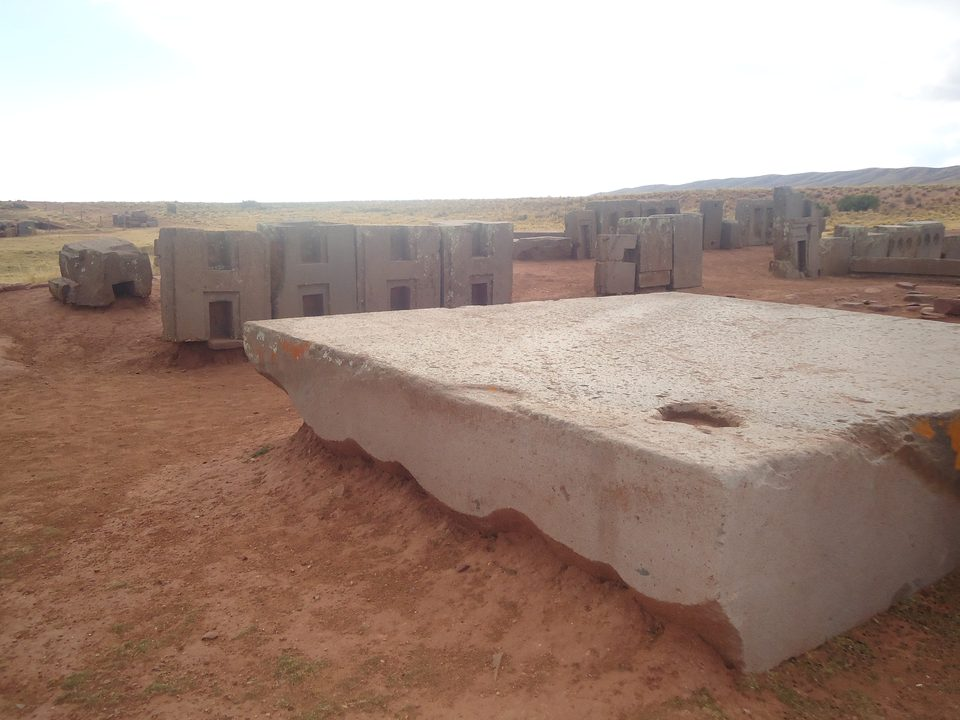
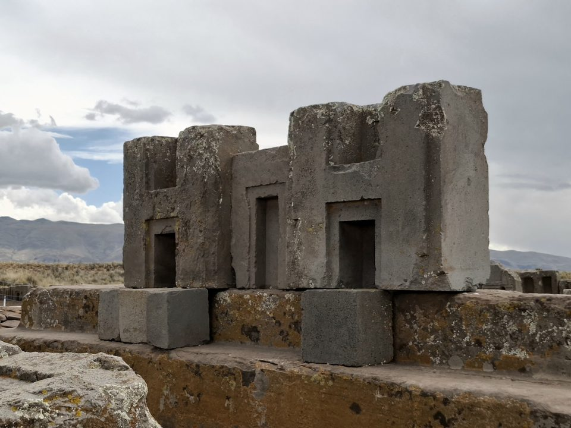
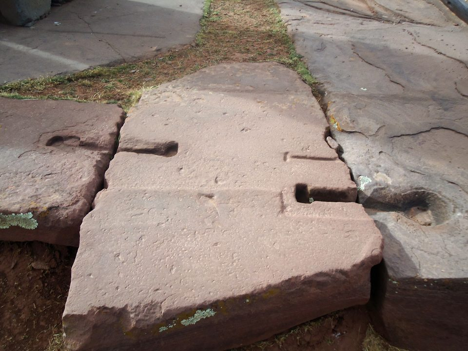
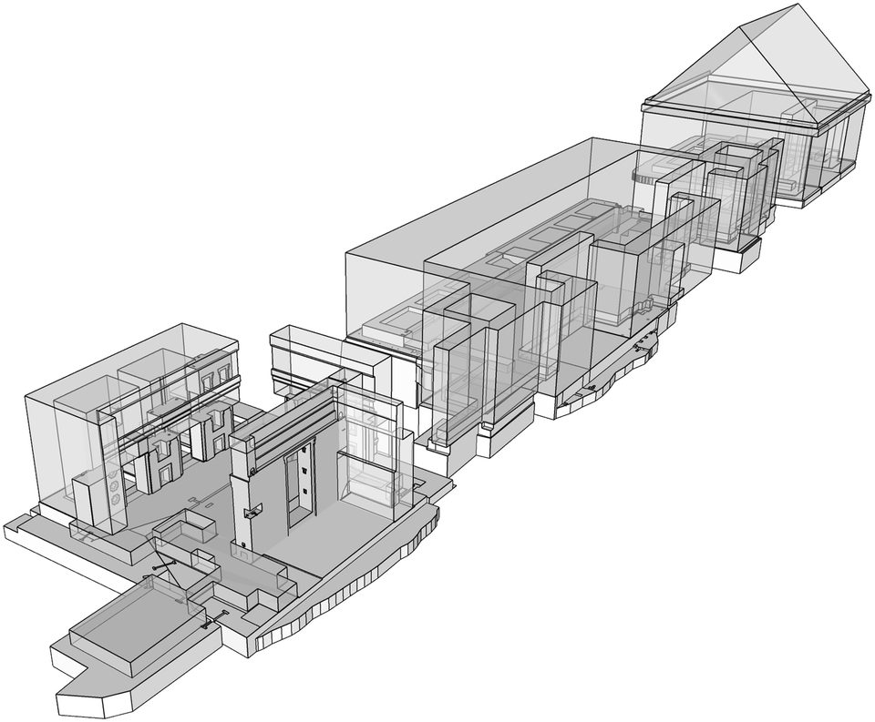

Puma Punku — as pedras em H de Tiwanaku
Num campo a quase quatro mil metros de altitude, blocos de pedra vulcânica cortados com ângulos retos estão espalhados como peças de um jogo derrubado. Nenhum deles está onde foi posto. O templo nunca foi terminado, foi desmontado por cinco séculos e virou, na internet, a prova favorita de que alguém de fora o construiu. As pedras contam outra história.
- Onde
- Tiwanaku, altiplano da Bolívia, 3.850 m
- Construção
- ≈ 580 – 710 d.C.
- Plataforma
- em T, ≈ 167 × 116 m
- Pedra
- arenito vermelho e andesito
- Blocos de andesito
- ≈ 150, todos fora do lugar
- Maior laje
- estimativas divergem: 83 a 131 t
Os primeiros europeus a descrever Puma Punku chegaram em meados do século XVI, e o tom das descrições é sempre o mesmo: assombro. O cronista Pedro Cieza de León passou por ali por volta de 1549 e não conseguiu imaginar como aquelas pedras tinham sido levadas e cortadas. Os relatos seguintes falam de portais e janelas talhados num único bloco, de lajes enormes e polidas — e de uma obra que parecia interrompida no meio.
Por volta de 1600, segundo os cronistas, restavam de pé um único portal e uma "janela". Nos séculos seguintes, nem isso. O que o visitante vê hoje é o resultado de quinhentos anos de caça ao tesouro, pedreira e reforma malfeita, sobre uma construção que já tinha sido abandonada antes de ficar pronta. É por isso que Puma Punku é, ao mesmo tempo, a obra mais refinada da cantaria andina antiga e uma das mais difíceis de entender.

01Um templo dentro de uma cidade
Puma Punku — "porta do puma", em aimará — não é um sítio isolado. É uma das construções monumentais de Tiwanaku, a cidade que foi, entre os séculos VII e X, o maior centro político e religioso da bacia do lago Titicaca. O núcleo principal da cidade, com a pirâmide de Akapana, a plataforma de Kalasasaya e o Templo Semissubterrâneo, fica a leste do povoado atual; Puma Punku fica a sudoeste. O conjunto é Patrimônio Mundial da UNESCO desde 2000.
O desenho é o de uma plataforma de terra em degraus, revestida de pedra, com planta em forma de T: cerca de 167 metros no lado oeste e 116 nos lados norte e sul, segundo as medições de escavação. Uma escadaria larga de arenito, gasta pelo uso, subia pelo oeste. No alto, do lado leste, há o que sobrou do coração do templo: dezessete lajes de arenito formando uma superfície plana de quase 39 por 7 metros, com rebaixos geométricos entalhados onde deveriam assentar as paredes e os portais de andesito.
O detalhe que muda a leitura é que a obra estava inacabada. Os cronistas já o diziam, e os estudos de arquitetura confirmaram: há lajes com acabamento incompleto e blocos de andesito com faces ainda em processo de desbaste. Parte do "mistério" de Puma Punku é, na verdade, o aspecto de um canteiro de obras parado há mais de mil anos.

02A data: de dezessete mil anos a uma ou duas gerações
Nenhum ponto de Puma Punku foi tão distorcido quanto a idade. A versão que circula em vídeos e livros de mistério — de que o sítio teria entre onze e dezessete mil anos — tem autor e data. É do engenheiro austro-boliviano Arthur Posnansky, que entre 1910 e 1945 defendeu essa antiguidade com base em comparações geológicas e em alinhamentos astronômicos da Kalasasaya. O método foi abandonado; a cifra sobreviveu.
A arqueologia do século XX trouxe a data para muito mais perto. Uma cronologia longa de Carlos Ponce Sanginés, dos anos 1970, recuava a fundação de Tiwanaku ao segundo milênio antes de Cristo, e também foi revista. Em 1999, Alexei Vranich publicou um radiocarbono da camada mais funda do aterro de Puma Punku: entre 536 e 600 depois de Cristo. Outras datas, reunidas por Jason Yaeger e Vranich em 2013, montaram uma sequência para o complexo.
O trabalho mais fino é de 2023. Erik Marsh e colegas reuniram 102 datas de radiocarbono de Tiwanaku num modelo estatístico bayesiano, publicado na PLOS ONE, e refinaram a cronologia de Puma Punku:
- ≈ 580 d.C. — começo da construção, pelo limite inicial do modelo.
- ≈ 630 d.C. — último uso de pedra extraída e entalhada para a obra. Depois disso, tanto em Puma Punku quanto na Akapana, a alvenaria passa a usar pedras reaproveitadas, pouco modificadas.
- ≈ 710 d.C. — fim da construção.
- ≈ 740 – 770 d.C. — oferendas depositadas junto aos muros externos.
- ≈ 1020 d.C. — um poço de saqueador já perturba as oferendas antigas.
A consequência é a frase mais forte do estudo: talvez só uma ou duas gerações de pedreiros tenham feito a maior parte da cantaria famosa de Tiwanaku, com seus planos lisos, cantos geométricos e encaixes justos. Não é uma tradição de séculos que se perdeu; é um surto curto de produção, depois do qual a cidade passou a reciclar as próprias pedras. O mesmo modelo põe a fundação de Tiwanaku no fim do século II e o fim da residência permanente por volta de 1010.
03Duas pedras, duas viagens
Puma Punku foi feito com dois materiais, e a diferença entre eles é a chave para entender a obra. As lajes da fundação e os blocos maiores são de arenito vermelho, uma pedra sedimentar relativamente macia. As peças finas — portais, frisos, os blocos em H — são de andesito, rocha vulcânica cinzenta, dura e de grão fino, que aceita aresta viva e superfície lisa.
O arenito veio de perto. Os estudos petrográficos de Ponce Sanginés e Mogrovejo, em 1970, apontaram pedreiras na serra de Kimsachata, a cerca de dez quilômetros ao sul. O andesito veio de longe, e aqui as fontes divergem. A identificação clássica é a península de Copacabana, do outro lado do lago, a uns noventa quilômetros. Em 2013, John Janusek, Patrick Ryan Williams e colegas analisaram o andesito de Tiwanaku por fluorescência de raios X e concluíram que a maior parte vinha do monte Ccapia, um vulcão extinto na margem sul do lago — sem descartar Copacabana. Nas duas leituras, a pedra cruzava ou contornava o Titicaca, e há um bloco de andesito desbastado e abandonado junto à margem, no antigo porto de Iwawe, que sugere o caminho pela água.
O peso das maiores lajes é outro ponto em que os números não fecham. A cifra mais repetida, de cerca de 131 toneladas para uma laje de 7,8 por 5,2 metros, vem das medições de Ponce Sanginés. Vranich, em 2018, descreve a maior laje de arenito com 8,12 por 3,86 por 1,2 metros e estima 83 toneladas. Parte da diferença é qual laje se mede e que densidade se supõe para a pedra; este dossiê registra as duas sem escolher. Em qualquer delas, é carga para rampa, alavanca, corda e muita gente — não para mistério.
04Os blocos em H e a fabricação em série
Os blocos em H são a imagem de Puma Punku. Visto de frente, cada um tem o perfil de uma letra H, com nichos, degraus e ângulos internos retos. O que impressiona não é um bloco isolado, mas a repetição: há peças praticamente idênticas entre si, e versões espelhadas, de mão direita e de mão esquerda, da mesma forma. Para o arquiteto Jean-Pierre Protzen e a historiadora da arquitetura Stella Nair, que estudaram a cantaria de Tiwanaku a partir dos anos 1990, isso indica padronização — formas intercambiáveis, produzidas segundo regras de proporção.
Eles notaram também uma particularidade de método. Em Tiwanaku, cada bloco de andesito era acabado antes de ser assentado, inclusive os frisos decorativos que se estendiam por várias peças. Em muitas tradições, o relevo é entalhado depois que o muro está montado; aqui não. Os blocos têm reentrâncias talhadas para içamento, que permitiam baixá-los devagar sem quebrar as arestas. E um bloco famoso, o chamado "Escritório do Inca", revelou-se uma maquete: uma versão reduzida, numa razão fixa, de uma composição arquitetônica em tamanho real. Havia modelos em pedra para orientar a obra.

Com que ferramentas? É uma das perguntas que continuam em aberto, e Protzen e Nair o dizem sem rodeio: as ferramentas dos pedreiros de Tiwanaku são essencialmente desconhecidas. Os ângulos internos retos e vivos não saem de percussão: a ponta do percutor não chega ao fundo do canto. Nos experimentos de Nair, ferramentas de pedra mais dura — sílex, ágata, jaspe, obsidiana, hematita — funcionaram; bronze, quase nada. A leitura de trabalho é a combinação de picoteamento, abrasão com areia e gabaritos, com muito tempo e mão de obra organizada.
05Os grampos de metal
Em várias lajes e blocos de Puma Punku há encaixes rasos em forma de I ou de T, talhados dos dois lados de uma junta. Eles recebiam grampos de metal que prendiam uma pedra à vizinha e impediam que deslizassem — um recurso conhecido também no Egito antigo e na Grécia. Hoje quase todos os encaixes estão vazios.
Os grampos que sobreviveram foram analisados pela arqueometalurgista Heather Lechtman, do MIT, em trabalhos publicados em 1997 e 1998. O metal é uma liga pouco comum, um bronze de cobre, arsênio e níquel. E o modo de fabricação variava: nos grampos de um canal do lado sul de Puma Punku, o metal foi fundido no próprio lugar — derramado líquido dentro dos encaixes já talhados, onde tomou a forma da cavidade. Na Akapana, os grampos de um canal foram feitos de outro jeito, martelando a frio lingotes da mesma liga.
Fundir no canteiro, a 3.850 metros, pede cadinho e forno capazes de fundir bronze — o que conversa com o que se sabe da metalurgia andina do período. Lechtman situou ligas desse tipo numa faixa entre Tiwanaku e San Pedro de Atacama, no norte do Chile, entre os anos 600 e 900. É tecnologia regional, datada e coerente com a cronologia da obra.

06Cinco séculos de desmonte
Puma Punku não caiu sozinho. A destruição tem camadas, e cada uma deixou marca:
- Saque colonial. Os espanhóis acreditavam que havia ouro nas ruínas e as reviraram; a caça ao tesouro seguiu por séculos. O próprio Vranich resume que, nos últimos quinhentos anos, os caçadores de tesouro desmontaram o edifício a ponto de nenhuma das cerca de 150 peças da arquitetura de pé estar no lugar.
- Pedreira pronta. Pedra cortada é material de construção barato. Blocos de Tiwanaku foram levados para casas, pontes e para a igreja colonial do povoado vizinho, erguida no início do século XVII, e também para La Paz.
- A ferrovia. A linha entre La Paz e o porto de Guaqui, no lago, aberta no começo do século XX, passa pela zona arqueológica, e pedras das ruínas foram quebradas e usadas como lastro e aterro da via.
- Tiro e intemperismo. Há registro de uso das ruínas como alvo por militares, e o clima do altiplano — geada, chuva, sol forte — trabalha sobre o que ficou exposto.
- Restauro malfeito. Em meados do século XX, um programa de escavação e reconstrução de inspiração nacionalista remontou trechos inteiros de Tiwanaku para dar ao sítio ar mais monumental. Em 2006, por ordem de um presidente interino, as lajes de Puma Punku foram niveladas e vários blocos foram reposicionados — em lugar e arranjo errados, segundo Vranich, contrariando publicações disponíveis.
O que sobrou para a pesquisa, além das pedras reviradas, foram os registros de quem passou antes: a planta e os desenhos do diplomata francês Léonce Angrand, de 1848, e as fotografias e anotações do arqueólogo alemão Max Uhle, de 1893. Em 2001, as comunidades indígenas da região assumiram a gestão das ruínas; hoje a administração é feita em colaboração com órgãos nacionais e internacionais.
07Montar o templo na palma da mão
Em dezembro de 2018, Alexei Vranich, então ligado à Universidade da Califórnia em Berkeley, publicou na revista Heritage Science uma saída para o quebra-cabeça. Em vez de escanear as pedras — escaneamento a laser e fotogrametria se mostraram caros, frágeis no clima do altiplano e pesados demais para quem administra o sítio —, a equipe voltou aos cadernos de campo. A maior parte dos blocos foi modelada a partir das medições feitas por Protzen nos anos 1990; peças que se perderam no último século vieram das anotações de Angrand e de Uhle.
As medidas foram digitadas num programa de modelagem simples, e cada peça foi impressa em gesso numa impressora 3D, a 4% do tamanho real — e não a um décimo, como às vezes se repete. Ao todo, 140 peças de andesito e 17 lajes de arenito; as lajes foram fresadas numa única placa de fibra, que virou a mesa de trabalho. Com as miniaturas na mão, os pesquisadores passaram meses testando encaixes. O momento decisivo veio quando perceberam que a maquete do "Escritório do Inca" e um portal em miniatura se encontravam em ângulo reto: a fachada que se imaginava reta era, na verdade, a quina de um edifício.

A forma que surgiu foi reconhecida na hora pelos especialistas: é o desenho de construções mais antigas da própria bacia do Titicaca, como as de Chiripa e de Pucara, séculos anteriores a Tiwanaku. Vranich anotou, com alguma ironia, que isso dava enfim uma prova sólida contra a ideia, repetida pelos entusiastas de alienígenas, de que Puma Punku não teria precedentes locais. Uma cópia completa das peças impressas foi entregue aos administradores indígenas do sítio.
Vale a ressalva que os próprios colegas de Vranich fazem. O estudo bayesiano de 2023 alerta contra reconstruções idealizadas, baseadas em ângulos retos, simetria e proporções perfeitas, que tendem a ignorar os detalhes que não se encaixam. A reconstrução de 2018 é a melhor proposta disponível para a forma do edifício — e é uma proposta.
08Descoberto ontem: a pedra escolhida pelo lugar
Em meados de 2026, uma equipe liderada por Luis Flores-Blanco e Patrick Ryan Williams, da Universidade Estadual do Arizona, publicou no Journal of Archaeological Science: Reports a análise química de oito chachapumas de Tiwanaku — esculturas de pedra vulcânica de seres meio homem, meio felino, que ladeavam os portais dos templos. Com fluorescência de raios X portátil e estatística, conferida em laboratório, eles concluíram que a pedra das estátuas vinha de fontes a mais de quarenta quilômetros, embora houvesse pedra adequada mais perto.
A interpretação dos autores é que a escolha seguia o significado dos lugares de onde a pedra saía, e não só a conveniência. É a mesma linha do estudo de 2013 sobre o andesito, do qual Williams também participou: em Tiwanaku, trazer pedra de longe — de um vulcão, de uma península sagrada do lago — fazia parte do sentido da obra. O trabalho não analisou os blocos de Puma Punku, e oito estátuas são uma amostra pequena; a equipe anuncia ampliar a análise para toda a bacia do Titicaca. Mas ele ajuda a responder a pergunta que mais alimenta o mistério — por que carregar andesito por dezenas de quilômetros — sem precisar de mistério nenhum.
09As leituras, da mais sóbria à mais improvável
Obra de Tiwanaku, feita entre os séculos VI e VIII, e deixada inacabada
É a leitura que reúne todas as linhas de evidência. O radiocarbono põe a construção entre o fim do século VI e o começo do VIII. As pedreiras de arenito e de andesito foram identificadas na própria região. Os grampos são de uma liga regional do mesmo período. A forma do edifício, reconstruída, repete modelos mais antigos da bacia do Titicaca. E a obra mostra o que se espera de trabalho humano interrompido: faces por acabar, maquetes de orientação, variação entre peças.
O que permanece em aberto dentro dessa leitura — as ferramentas exatas, o método de transporte, a forma final — é pergunta de arqueologia, não lacuna que peça outra explicação.
De onde veio o andesito, e por que caminho
Copacabana, a noventa quilômetros, pela identificação clássica; o monte Ccapia, na margem sul do lago, pela análise química de 2013. Pela água, em embarcações de junco, como sugere o bloco abandonado em Iwawe, ou por terra, contornando o lago. As fontes não fecham, e pode ter havido mais de uma pedreira.
A Porta do Sol pertencia a Puma Punku
O portal monolítico mais famoso de Tiwanaku está hoje na Kalasasaya, onde foi reerguido. Muitos especialistas acham que ele foi feito para Puma Punku, pela pedra, pelo estilo e pelos fragmentos de outros portais semelhantes encontrados ali. É hipótese bem fundamentada, sem prova de posição original.
Os blocos seriam pedra artificial, moldada como concreto
Em 2019, Joseph Davidovits, Luis Huaman e Ralph Davidovits publicaram na revista Materials Letters a tese de que o arenito e o andesito de Puma Punku seriam "geopolímeros" — grãos de pedra aglutinados por uma massa produzida pelo homem e moldados no lugar. A proposta saiu numa revista de ciência de materiais, de um grupo que defende a mesma ideia para as pirâmides do Egito, e não foi confirmada por análise independente. Esbarra nas pedreiras identificadas e nas marcas de desbaste dos blocos inacabados.
Dezessete mil anos de idade
A cronologia de Posnansky dependia de alinhamentos astronômicos e de suposições geológicas, sem datação física. Todo material orgânico datado do aterro de Puma Punku cai no primeiro milênio depois de Cristo.
Alienígenas, ou uma tecnologia perdida
Puma Punku é peça fixa da literatura de "astronautas antigos" desde os livros de Erich von Däniken e virou episódio inteiro da série de TV Ancient Aliens. O argumento é sempre o mesmo: precisão demais, altitude demais, pedra demais para a época. As peças respondem uma a uma. A pedra é local e as pedreiras são conhecidas. O metal é bronze regional. A data é medida. A forma tem precedentes na região. E a obra está cheia de sinais de mão humana: blocos por terminar, maquetes, peças "iguais" que não são idênticas.
Há também um custo nessa tese que raramente se diz. Tirar a autoria de Puma Punku dos povos do altiplano — cujos descendentes aimarás ainda vivem em volta das ruínas e hoje participam da gestão do sítio — é apagar a capacidade de quem de fato a ergueu. O que Puma Punku mostra não é que alguém de fora veio construí-lo; é que uma ou duas gerações de pedreiros andinos, há catorze séculos, fizeram uma das cantarias mais refinadas do mundo antigo.
10Cronologia
- ≈ 550 a.C. – 300 d.C.Chiripa e Pucara, na bacia do Titicaca, erguem pátios rebaixados e recintos retangulares — o modelo que reaparece em Puma Punku.
- fim do séc. IIFundação de Tiwanaku, segundo o modelo bayesiano de 2023.
- 536 – 600Radiocarbono da camada mais funda do aterro de Puma Punku, publicado por Vranich em 1999.
- ≈ 580Começo da construção, pelo modelo de 2023.
- ≈ 630Último uso de pedra extraída e entalhada para a obra; a partir daí, Puma Punku e Akapana reaproveitam pedras.
- 600 – 900Faixa em que o bronze de cobre, arsênio e níquel aparece entre Tiwanaku e San Pedro de Atacama.
- ≈ 710Fim da construção. O templo fica inacabado.
- ≈ 1010Fim da residência permanente em Tiwanaku. Um poço de saqueador em Puma Punku é datado de por volta de 1020.
- ≈ 1549Pedro Cieza de León descreve as ruínas, entre os primeiros europeus a fazê-lo.
- ≈ 1600Restam de pé um portal e uma "janela". Começa o uso das ruínas como pedreira, inclusive para a igreja do povoado.
- 1848Léonce Angrand desenha a primeira planta conhecida do templo.
- 1893Max Uhle fotografa e mede os blocos do lado leste.
- 1910 – 1945Arthur Posnansky defende uma idade de onze a dezessete mil anos para Tiwanaku.
- início do séc. XXA ferrovia La Paz–Guaqui atravessa a zona arqueológica; pedras das ruínas viram lastro.
- 1970Ponce Sanginés e Mogrovejo identificam as fontes do arenito e do andesito.
- 1990sProtzen e Nair medem os blocos de andesito e estudam a técnica da cantaria.
- 1997 – 1998Heather Lechtman publica a análise dos grampos: bronze de cobre, arsênio e níquel, fundido no lugar em Puma Punku.
- 2000Tiwanaku entra na lista do Patrimônio Mundial da UNESCO.
- 2006Intervenção ordenada pelo governo interino nivela as lajes e reposiciona blocos de forma incorreta.
- 2013Janusek, Williams e colegas apontam o monte Ccapia como fonte principal do andesito de Tiwanaku.
- dezembro de 2018Vranich publica a reconstrução por impressão 3D na Heritage Science.
- 2019A tese do geopolímero sai na Materials Letters.
- novembro de 2023Marsh e colegas publicam a cronologia bayesiana de Tiwanaku na PLOS ONE.
- meados de 2026A equipe de Flores-Blanco e Williams mostra que a pedra das chachapumas veio de fontes a mais de 40 km.
11O que continua em aberto
Com que ferramentas. Os experimentos mostram que ferramentas de pedra dura e abrasivo bastam para o resultado, mas nenhum conjunto de ferramentas dos pedreiros de Tiwanaku foi encontrado em contexto de oficina que feche a questão.
Como era o edifício. A reconstrução de 2018 propõe a forma geral do prédio de andesito, mas a ligação entre os blocos e os rebaixos das lajes só é segura num ponto, e uma quantidade desconhecida de peças se perdeu ou continua enterrada.
De onde, exatamente, e por onde. Copacabana ou Ccapia, ou as duas; pelo lago ou por terra. A química das pedras de Puma Punku, peça a peça, ainda não foi publicada na escala do estudo das chachapumas.
Por que parou. O modelo de 2023 mostra que a pedra nova deixa de chegar por volta de 630 e que a cidade passa a reciclar. Se foi mudança de poder, de projeto ou de recursos, ninguém sabe. E a maior parte do complexo de Tiwanaku continua sem escavação.
12Perguntas frequentes
O que é Puma Punku?
É um templo de Tiwanaku: uma plataforma de terra em degraus, revestida de pedra e com planta em forma de T, onde deveria se erguer um edifício de andesito. A obra ficou inacabada e foi desmontada ao longo de cinco séculos; nenhum dos cerca de 150 blocos de andesito está onde foi posto.
Onde fica Puma Punku?
Em Tiwanaku, no altiplano da Bolívia, a 3.850 metros de altitude, na bacia do lago Titicaca. Fica a sudoeste do núcleo principal da antiga cidade, que é Patrimônio Mundial da UNESCO desde 2000.
Quem construiu Puma Punku?
Os pedreiros de Tiwanaku. A pedra vem de pedreiras da própria região, os grampos são de uma liga de bronze regional do mesmo período, e a forma do edifício repete modelos mais antigos da bacia do Titicaca. Ver as leituras.
Qual a idade de Puma Punku?
Pelo radiocarbono, a construção começou por volta de 580 depois de Cristo e terminou por volta de 710, segundo o modelo de 2023. A idade de onze a dezessete mil anos que circula na internet vem de Arthur Posnansky e não tem datação física por trás. Ver A data.
Como foi feito Puma Punku?
As ferramentas exatas continuam desconhecidas. A leitura de trabalho é picoteamento, abrasão com areia e gabaritos, com ferramentas de pedra dura, muito tempo e mão de obra organizada; os blocos eram acabados antes de assentados, e várias pedras eram presas umas às outras com grampos de metal. Ver Os blocos em H.
13Fontes consultadas
Este dossiê é texto autoral. As fontes abaixo foram consultadas para apuração de datas, medidas e atribuições; nenhuma foi reproduzida.
- Verbetes enciclopédicos consolidados sobre Puma Punku e Tiwanaku — localização, dimensões, histórico de destruição, teorias.
- Ponce Sanginés, C.; Mogrovejo Terrazas, G. — Acerca de la procedencia del material lítico de los monumentos de Tiwanaku. La Paz, 1970.
- Protzen, J.-P.; Nair, S. — Who Taught the Inca Stonemasons Their Skills? A Comparison of Tiahuanaco and Inca Cut-Stone Masonry. Journal of the Society of Architectural Historians, 1997.
- Protzen, J.-P.; Nair, S. — The Stones of Tiahuanaco: A Study of Architecture and Construction. Cotsen Institute of Archaeology, UCLA, 2013.
- Lechtman, H. — Architectural Cramps at Tiwanaku: Copper-Arsenic-Nickel Bronze. Em Rehren, Hauptmann e Muhly (orgs.), Metallurgica Antiqua, 1998; e trabalho de 1997 sobre a distribuição da liga.
- Vranich, A. — Interpreting the Meaning of Ritual Spaces: The Temple Complex of Pumapunku, Tiwanaku, Bolivia. Tese, Universidade da Pensilvânia, 1999.
- Yaeger, J.; Vranich, A. — A Radiocarbon Chronology of the Pumapunku Complex and a Reassessment of the Development of Tiwanaku, Bolivia. Em Advances in Titicaca Basin Archaeology-2, Cotsen Institute, 2013.
- Janusek, J. W.; Williams, P. R.; Golitko, M.; Lémuz Aguirre, C. — Building Taypikala: Telluric Transformations in the Lithic Production of Tiwanaku. Em Mining and Quarrying in the Ancient Andes, Springer, 2013.
- Vranich, A. — Reconstructing ancient architecture at Tiwanaku, Bolivia: the potential and promise of 3D printing. Heritage Science, vol. 6, art. 65, dezembro de 2018.
- Davidovits, J.; Huaman, L.; Davidovits, R. — Ancient geopolymer in south-American monument. SEM and petrographic evidence. Materials Letters, vol. 235, 2019.
- Marsh, E. J. et al. — The center cannot hold: A Bayesian chronology for the collapse of Tiwanaku. PLOS ONE, novembro de 2023.
- Flores-Blanco, L.; Guengerich, A.; Bowen, C.; Janusek, J. W.; Williams, P. R. — Volcanic stone sculptures of were-animals at Tiwanaku: pXRF and statistical analyses suggest regional geochemical provenance of chachapuma statues. Journal of Archaeological Science: Reports, 2026 (doi 10.1016/j.jasrep.2026.105858); e nota da Universidade Estadual do Arizona, 13 de julho de 2026.
- UNESCO — inscrição de Tiwanaku, centro espiritual e político da cultura Tiwanaku, na lista do Patrimônio Mundial, 2000.